Desayunos, Platillos y Cocteles

SALMON PRIMAVERA
Salmón sellado sobre cremoso hummus de remolacha, acompañado de coliflor rostizada, garbanzos crocantes, remolacha caramelizada con reducción balsamica y delicadas flores comestibles.
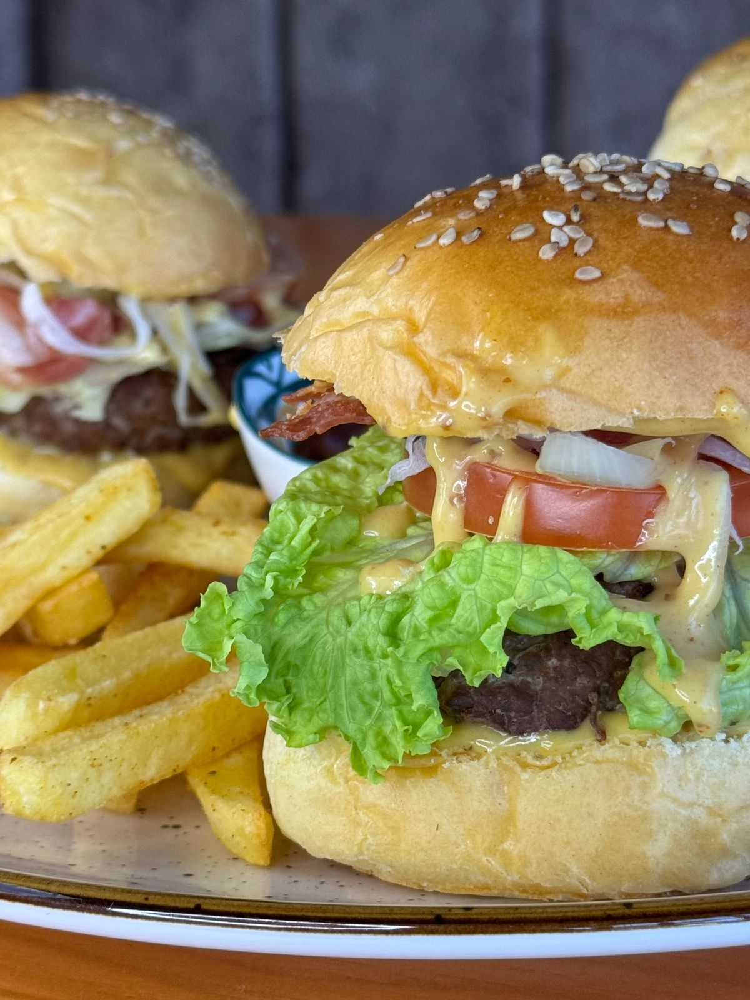
HAMBURGUESA HONEY BACON
Hamburguesa a la parrilla coronada con crujiente bacon y queso suizo fundido.
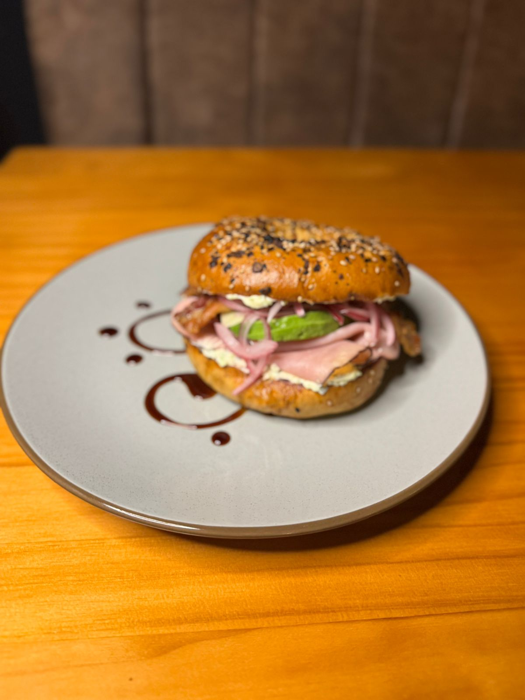
BAGEL
Bagel tostado con cremoso queso crema, finas láminas de jamón selva negra, aguacate y tomates cherry, realzado con un toque de infusión balsámica..
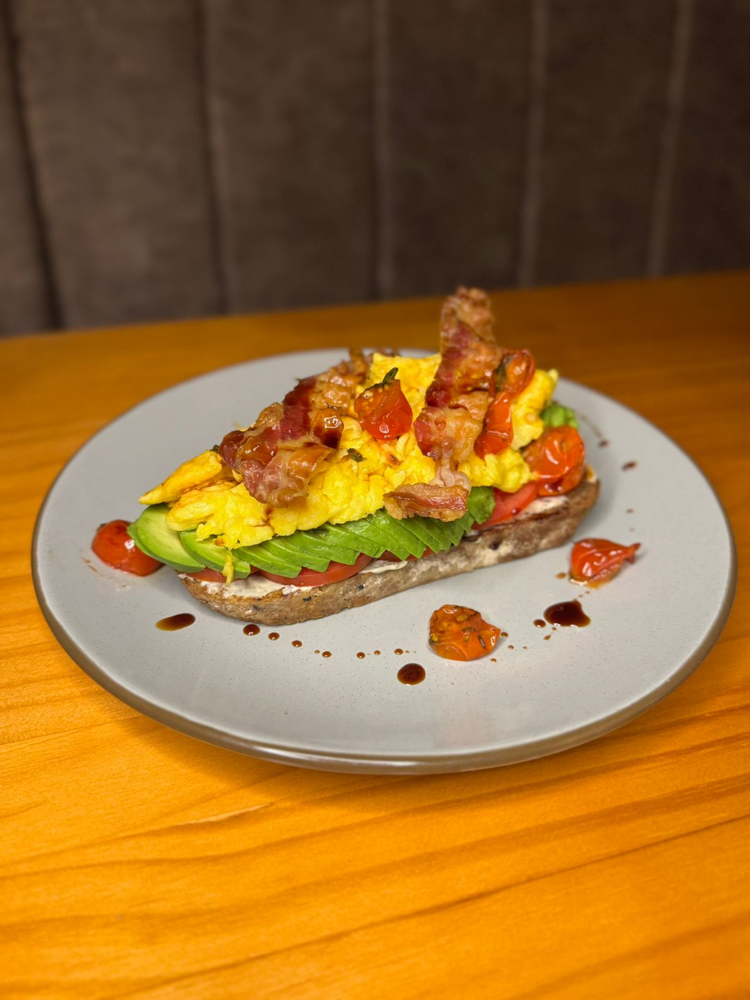
TOSTADA DE AGUACATE
Crujientes con base de queso crema, láminas de aguacate, tomates cherry salteados, huevo cremoso y un toque de reducción balsámica.
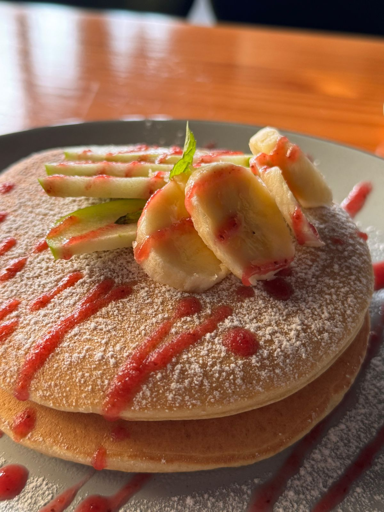
PANQUEQUES
Esponjosos panqueques servidos con jalea de fresa, rodajas de banano y fresas frescas, todo bañado en un hilo de miel dorada..
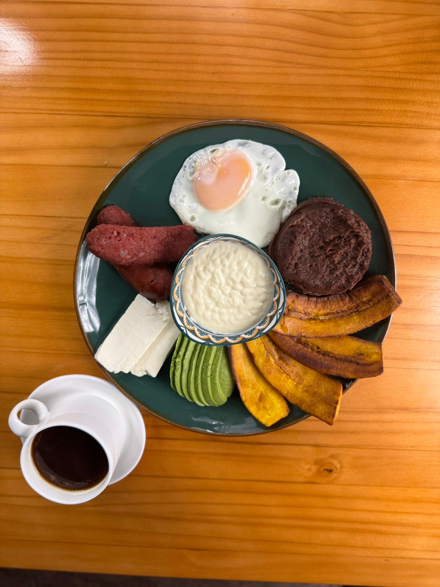
TRADICION CATRACHA
El desayuno clásico hondureño con plátano maduro, huevo al gusto, chorizo Frijoles, mantequilla, aguacate y queso fresco.
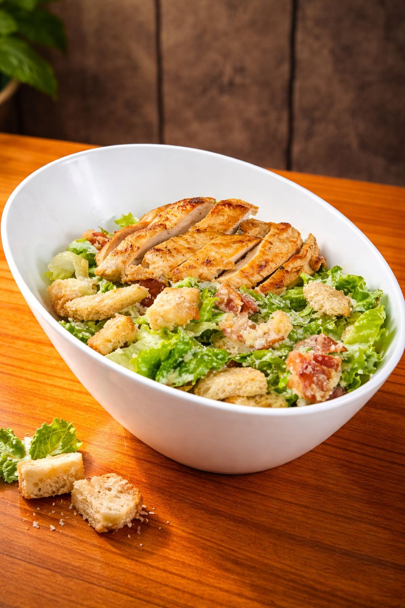
ENSALADA CESAR
Rica ensalada con pollo a la planncha, fresca lechuga romana, trozitos de pan de ajo y nuestro delicioso aderezo de la cas.

ENSALDA STEAK
Rica ensalada con una exploxion de sabores vegetales y deliciosas tiras de carne de res.
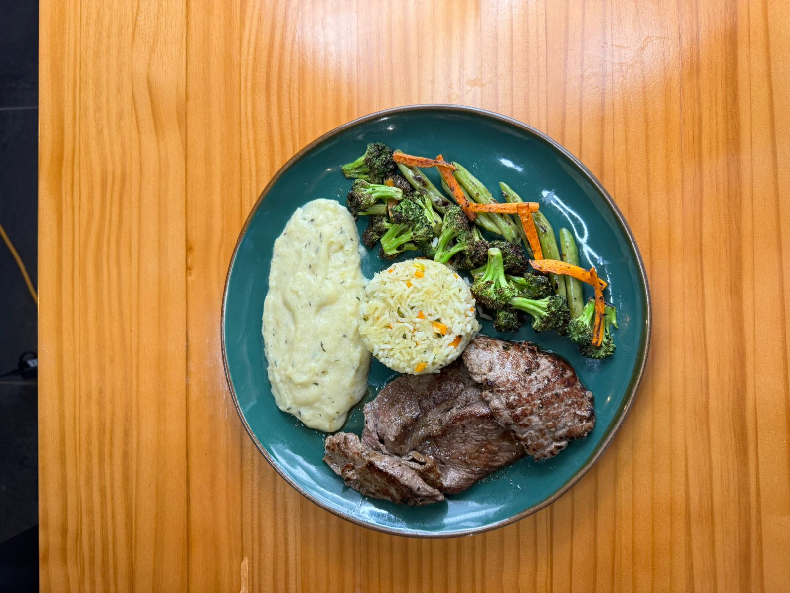
SOLOMILLO
Tierno y jugoso corte de res al termino deseado, servido con dos complementos de tu elección..
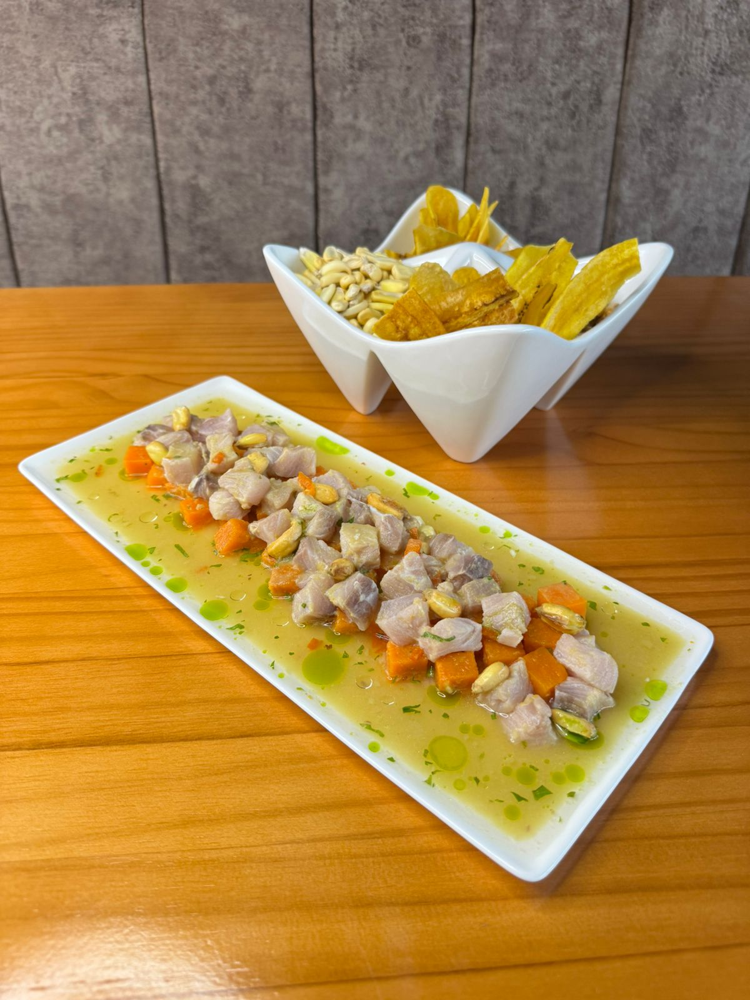
CEVICHE PERUANO
Pescado fresco, limón, ají limo y cebolla morada y camote para cerrar el combo de sabor peruano.
CORVINA EN CREMA DE AJO ROSTIZADO
Corvina dorada con crema de ajo rostizado, vegetales a la plancha y elegantes flores comestibles.
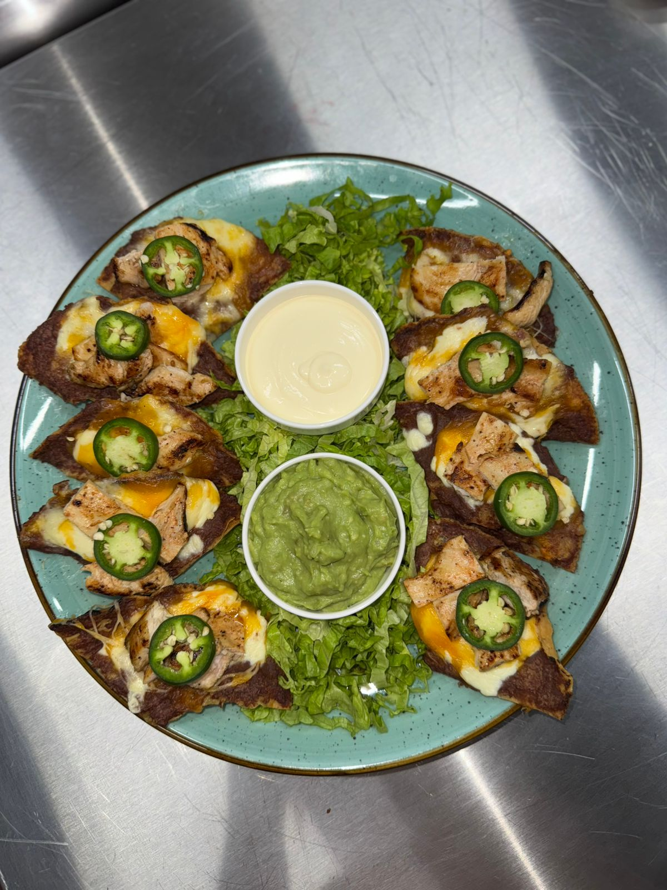
NACHOS CARAJILLOS
Crujientes nachos bañados en salsa de queso fundido, carne de res sazonada a la parrilla y guacamole fresco de la casa.
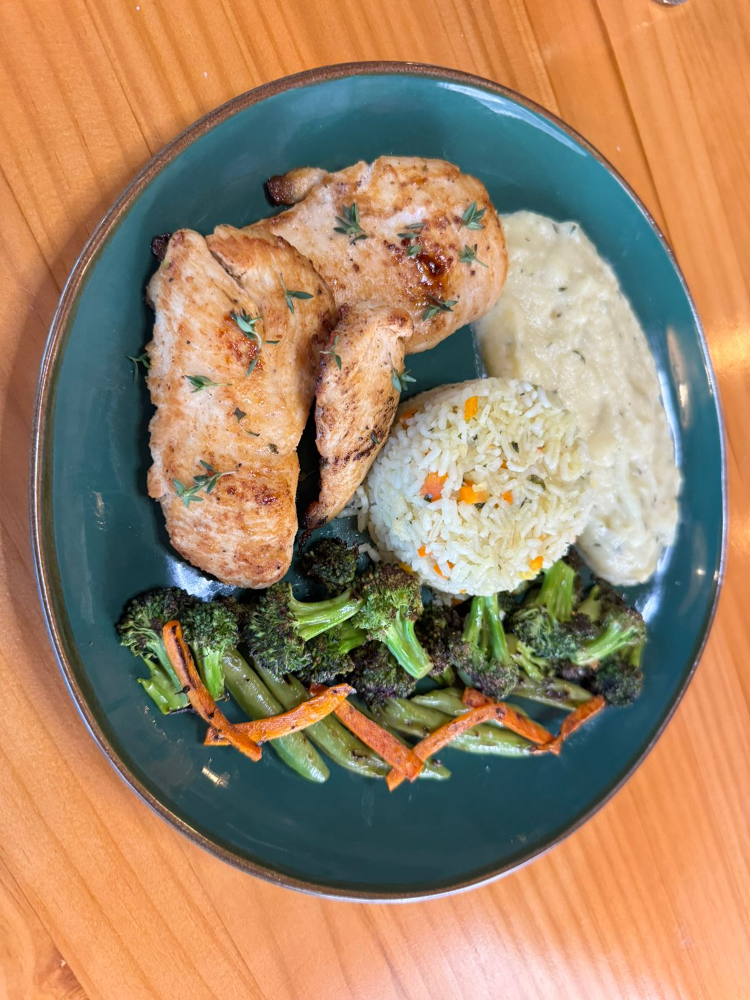
POLLO A LA PLANCHA
Pechuga de pollo a la plancha, jugosa y dorada, acompañada de arroz a la jardinera, puré de papas cremoso y vegetales frescos salteados.

CARAJILLO
El equilibrio perfecto entre energía y placer. Una mezcla vigorosa de Licor 43 y un shot de café espresso 100% arábica, agitados con hielo hasta lograr esa textura sedosa y una espuma densa y dorada que lo caracteriza. El cierre perfecto para cualquier comida..
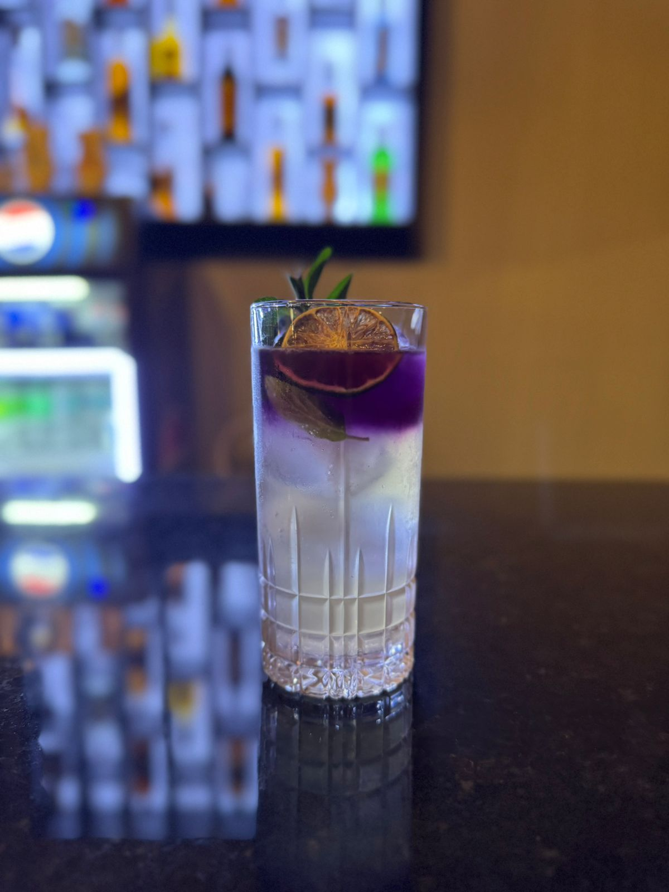
COCTEL COREANO
Un viaje directo al corazón de Corea en cada trago. Elaborado con Soju, el destilado coreano por excelencia.